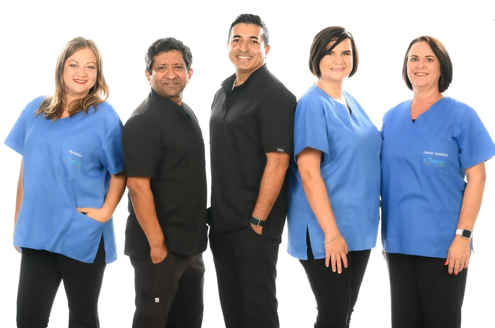
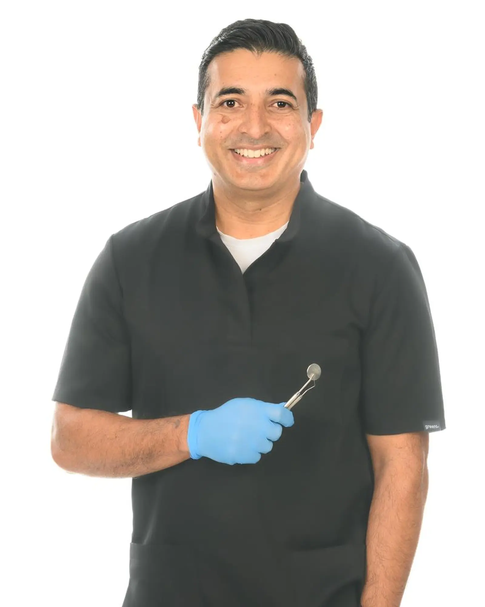
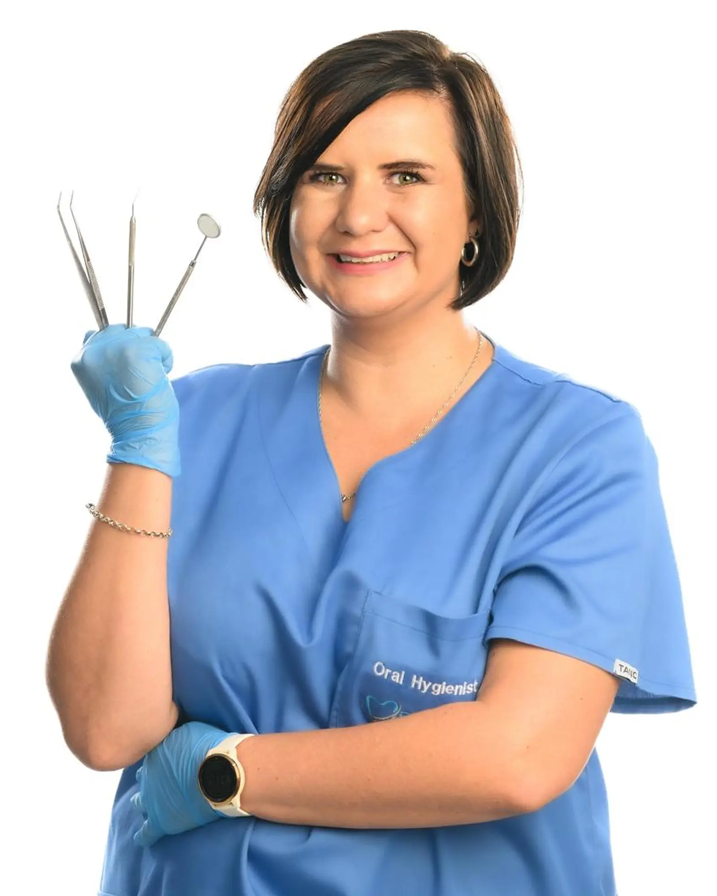

DENTIST@POTCH
Care that feels personal
A friendly team, clear guidance and dental care centred on you.

DENTIST@POTCH
A friendly team, clear guidance and dental care centred on you.
WELCOME TO DENTIST@POTCH
From routine check-ups to complete smile transformations, our team is here to make high-quality dental care feel calm, clear and personal.
MEET THE CLINICAL TEAM
Meet the dental professionals committed to making every visit comfortable, clear and personal.
Senior Dentist | General & Cosmetic Dentistry
31+ years of experience
With over 31 years of clinical experience, Dr. Jacob provides compassionate care across preventive, restorative and long-term oral health management. Known for a gentle, precision-focused approach, he listens carefully, explains treatment options clearly and creates comfortable experiences for patients of all ages.

Senior Dentist | General & Cosmetic Dentistry
28 years of experience
With 28 years of clinical experience, Dr. Thannivayalil provides patient-centred general and cosmetic dentistry, including preventive care, restorations and smile enhancement. He combines a modern, conservative treatment approach with clear communication and gentle family care to support lasting oral health.
Dental Therapist
Amod Thabasum Bibi is a dedicated Dental Therapist focused on preventive care, routine restorations and practical oral-health education. Her gentle, patient-centred approach helps create comfortable, accessible dental visits for patients of all ages while encouraging healthy habits for lifelong smiles.

Oral Hygienist
Welme Winder is an Oral Hygienist dedicated to helping patients maintain healthy, confident smiles through gentle preventive care. She provides routine cleanings, plaque and tartar removal, stain treatment and personalised oral-hygiene guidance, tailoring home-care routines for adults, teenagers and young children.
GOOGLE REVIEWS
★★★★★
Telephone (09:00-18:00)
062 406 9799Click to chatEmergency contact
062 495 9946Click to chatClinic hours
Monday–Friday · 09:00–18:00